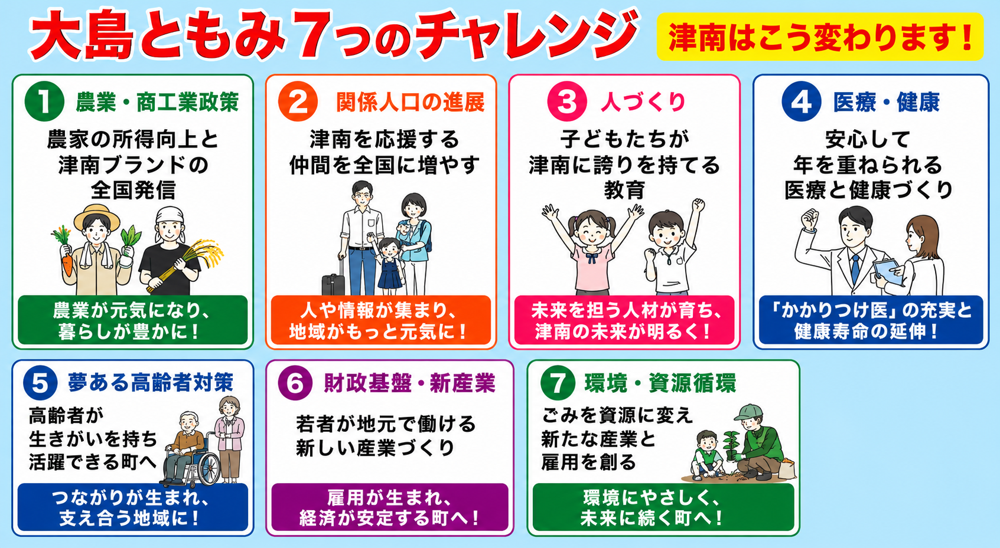

南魚沼農業高校卒業／元津南町議会議員（6年間）／元津南小学校後援会長
（株）ごはん・（株）SOL・（株）のけはし未来 代表取締役
— 皆さまへ — ごあいさつ
人口減少や少子高齢化、地域経済の衰退など、地方が直面している課題は山積しています。しかし、津南は、雪、山、農業、観光、医療と豊かな地域資源を持つポテンシャルの高い町です。
私はこの30年間にわたって事業家として地域に関わってまいりました。この経験を活かして、多くの皆様とともに、津南の再起動をめざしたいと思います。「実行力」で、つなんを動かす。皆さまのご支援を、どうぞよろしくお願いいたします。
大島ともみ
KEY POLICY
重点政策
「津南デジタル・エネルギーパーク構想」
津南の未来を支える新しい産業の拠点づくり。
地域固有の豊かな自然・水資源を活用し、
次世代産業を津南に誘致します。
1
データセンター
雪国の低温環境を活かした省エネ・安定稼働。国内屈指の低コスト冷却環境で企業誘致を実現。
2
系統用蓄電所
再生可能エネルギーの集約・分配の要。エネルギー需要拡大への対応と地域収益化。
3
EV電池リユース工場
EV普及で需要急増する電池のリユース・リサイクル。地元雇用と新産業を同時に創出。
津南町への効果
- 地元雇用：30〜80人創出
- 年1〜4億円規模の固定資産税収入
- 若者が誇りを持てる製造業の仕事づくり
7 CHALLENGES
大島ともみ 7つのチャレンジ

基本情報
| 氏名 |
大島 ともみ（おおしま ともみ） |
| 役職 |
津南町長候補 |
| 生年 |
1955年（昭和30年）津南町貝坂生まれ |
| 学歴 |
南魚沼農業高校卒業 |
| 経歴 |
1991年（平成3年）株式会社ごはん 創業
元津南町議会議員（6年間）
元津南小学校後援会長
（株）ごはん 代表取締役
（株）SOL 代表取締役
（株）のけはし未来 代表取締役 |
| 出身 |
新潟県津南町 |